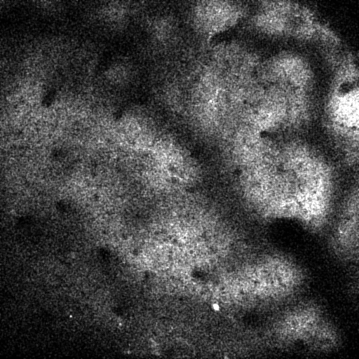
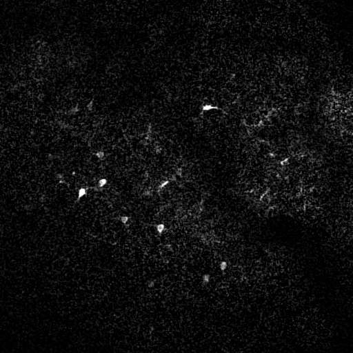
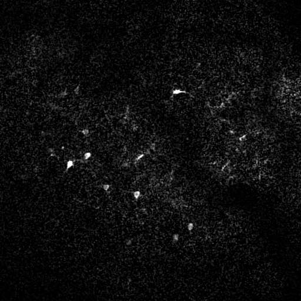
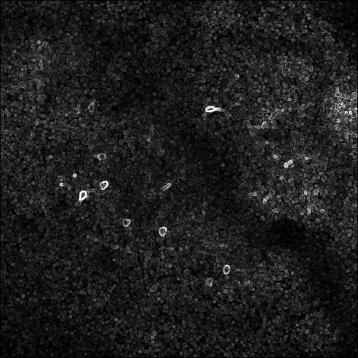
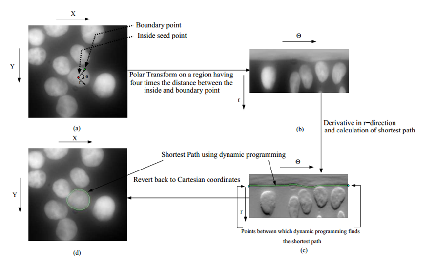
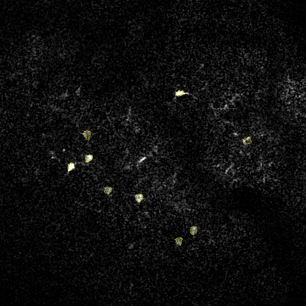
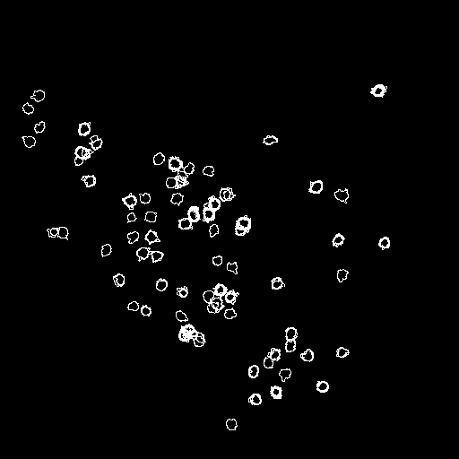
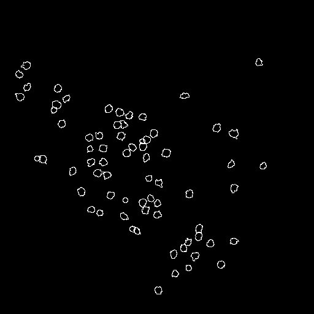

This document lays out the steps for detecting the somata of GCaMP labeled neurons during live imaging. The same algorithm may be used for offline image analysis following an experiment.
GCaMP labeled cells are nontrivial to find automatically. Because GCaMP doesn't penetrate into the nucleus, most of the area contained by the soma will be dark. This rules out the most common cell detection methods (e.g., the Mexican Hat -> Threshold algorithm that works for filled cells like OGB).
The algorithm steps are as follows:
The algorithm assumes that there is very little movement between frames. If you have movement artifacts, fix 'em first. The specifics are beyond the scope of this document. Online motion correction methods often involve tracking a bright subcomponent of the live image. For offline processing, many algorithms are available; for example, the Register ROI plugin for ImageJ works well.
GCaMP responds quickly to spiking events, ramping up rapidly in intensity. When watching an experiment, it's easy to spot GCaMP labeled cells when they start spiking, because they change from "nearly invisible" to "bright and obvious". It follows, then, that an easy way to remove background noise (and make cells very obvious) is to subtract the previous frame from each frame of your imaging run. The resulting "difference image" keeps cells and removes a lot of background.
If you wanted to get more fancy with this, you could incorporate more characteristics of the GCaMP temporal response curve (e.g. fit a filter that goes up fast, and drops slowly). Correlation of neighboring pixels is another option. But the difference image approach is unrivaled in its simplicity, generality, and low compute cost.
 

Given a difference image with a cell in it, now we'd like to mark a spot somewhere inside that cell; near the center would be nice.
To do this, we'll first make a gradient image using an edge detection filter. The gradient shows where there are sharp transitions from dark to light or light to dark in the image. The gradient has a direction, too: it points towards the light and away from the dark.
If you were to take the gradient of a white circle on a black image, the gradient would point strongly towards the center of the circle.
If you were to then holow out the center of the circle, you'd have arrows pointing in both directions. Notably, however, the highest concentration of arrows would still be inside the cell. This is an intuitive description of the Gradient Hough Transform is doing.
The Gradient Hough Transform produces an image with hotspots inside of each cell. A small amount of blurring, followed by peak-finding, gives us a single marker inside of each cell. Those are the seed points.

Picture yourself inside of a cell, at the seed point. You're sitting on a swivel chair. When you spin around, you can see the edge of the cell in every direction.
That's what the polar transform does: it looks in every direction outwards from the seed point to create a polar image. In the polar image, there will be a nearly-straight line that follows the edge of the cell. Using dynamic programming, we can find the best such edge and follow it, giving a perfectly-fit cell outline.
If we wanted to exclude the nucleus and make an annulus ROI, two lines would be drawn in the polar image: one marking the edge of the nucleus, and one marking the edge of the soma. (This hasn't been implemented yet, but it's easy.)
 At this point, we have one outline per occurrence for each cell in the time series. What we want is one outline per cell. So, we claim that any outlines within a short distance of each other belong to the same cell, and take the best of all outlines as the representative cell outline.
 